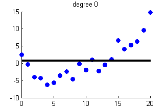
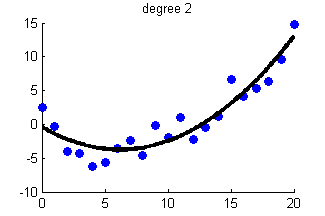
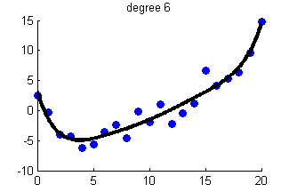
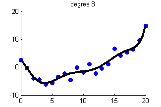
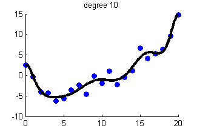
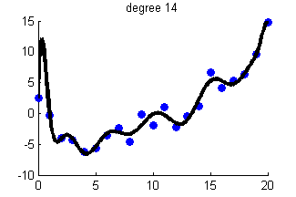
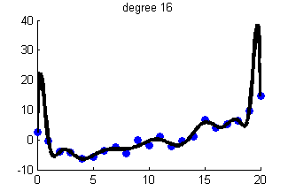

Linear Regression with Polynomial Basis of different degrees
[xtrain, ytrain, xtest, ytestNoisefree, ytest] = polyDataMake('sampling','thibaux');
degs = 0:2:16;
Nm = length(degs);
mseTrain = zeros(1,Nm); mseTest = zeros(1,Nm);
for m=1:length(degs)
deg = degs(m);
addOnes = false;
Xtrain = rescaleData(degexpand(xtrain, deg, addOnes));
Xtest = rescaleData(degexpand(xtest, deg, addOnes));
model = linregFit(Xtrain, ytrain, 'lambda', 0);
ypredTrain = linregPredict(model, Xtrain);
ypredTest = linregPredict(model, Xtest);
figure;
scatter(xtrain,ytrain,'b','filled');
hold on;
mseTrain(m) = mean((ytrain-ypredTrain).^2);
mseTest(m) = mean((ytest-ypredTest).^2);
plot(xtest, ypredTest, 'k', 'linewidth', 3);
hold off
deg = degs(m);
title(sprintf('degree %d', deg))
if deg==14
printPmtkFigure(sprintf('polyfitDemo14'))
end
end
figure;
hold on
plot(degs, mseTrain, 'bs:', 'linewidth', 2, 'markersize', 12);
plot(degs, mseTest, 'rx-', 'linewidth', 2, 'markersize', 12);
xlabel('degree')
ylabel('mse')
legend('train', 'test')
printPmtkFigure('linregPolyVsDegreeUcurve')
placeFigures;
      